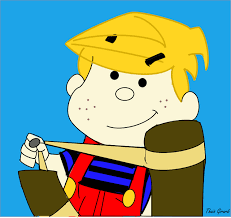

Portfólio Hugo Freitas
Dados Pessoais:
E-mail:hugo.braga@aluno.ifsp.edu.br
LinkedIn:
Clique Aqui
GitHub:
Clique Aqui
Endereço: Rua Voluntários da Pátria, 3473
Cidade: Araraquara - SP
Data de Nascimento: 20/12/1995
Capacitações:
Formado em Ciências Sociais pela UNESP Araraquara
Quatro Anos de Bolsa de Iniciação Cientifica pela Pibic com foco na área de Políticas Publicas
Dois Anos como Participante ativo de Eventos Acadêmicos pelo Centro Acadêmico de Ciências Sociais
Estágio Docência de inicio de 2016 até final de 2017 pela Coeducar - Instituto de Educação
Estágio Santander entre Março de 2018 a Outubro de 2018 como Auxiliar de Estoque Virtual
Curiosidades sobre mim:
Bati a cabeça quando tinha 2 anos caindo de uma cadeira de balanço

Sou privilegiado de torcer para a maior instituição futebolistica da história: A Sociedade Esportiva Palmeiras!
Começei a faculdade novamente na pandemia, após desistir do mestrado em Ciências Sociais
Quer saber mais? Clique aqui!